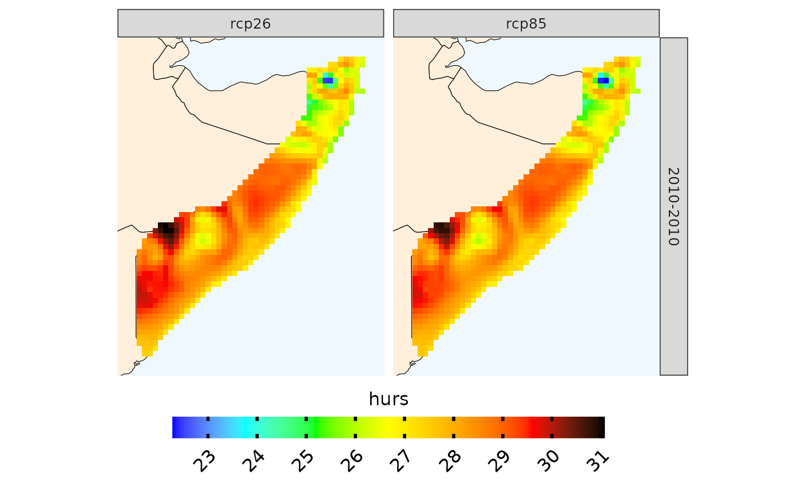

plotting.RdAutomatically plot results from CAVAanalytics step two
plotting( rst, palette, legend_range, plot_titles, ensemble, bins, n.bins, alpha, ... )
| rst | output of one of CAVAanalytics functions, such as projections. rst is of class SpatRaster |
|---|---|
| palette | charachter. Color Palette |
| legend_range | numeric. Fix legend limits |
| plot_titles | character. Title of the plot legend |
| ensemble | logical. Whether to visualize the ensemble mean or each individual model |
| bins | logical. Whether to visualize colors as a gradient or in bins |
| n.bins | numeric. Controlling the number of bins when bins equal TRUE |
| alpha | numeric. Transparency of colors |
ggplot object
load_data(country = "Somalia", variable="tas", years.hist=2000, years.proj=2010, path.to.data = "CORDEX-CORE", domain="AFR-22") %>% projections(., season = 1:12) %>% plotting(plot_titles="hurs", ensemble=T)#>#> ✔ Accessing inventory [2.5s]#>#> ℹ Downloading CORDEX-CORE data (18 simulations). This might take a while. Using…#> ✔ Downloading CORDEX-CORE data (18 simulations). This might take a while. Using…#>#> ℹ Downloaded 127.12 MB#> ℹ Binding members and checking temporal consistency#> ✔ Binding members and checking temporal consistency [1.5s]#>#> ℹ Temperature has been converted into Celsius#> ℹ projections, season 1-2-3-4-5-6-7-8-9-10-11-12. Calculation of mean tas#> ℹ Performing calculations#> ✔ Performing calculations [1.3s]#>#> ℹ Visualizing ensemble mean#> ℹ Plotting#> ✔ Plotting [18ms]#>